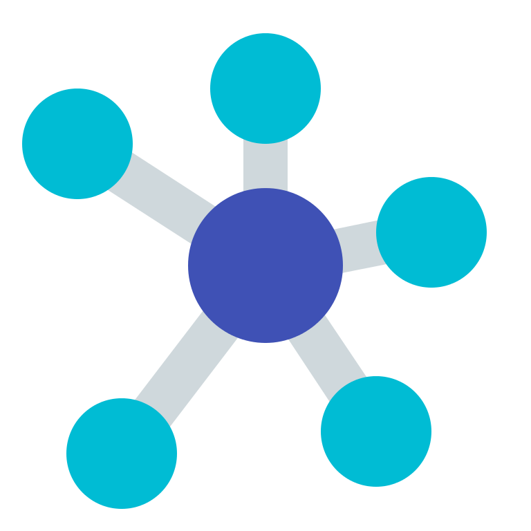

NGI Data Sprint

Wikipedia Networks
- Social keywords:
- download data: NGI_social_kws_net_filtered_in2_out2.csv
- visualization: Gephi
- Tech keywords:
- download data: NGI_tech_kws_net_filtered_in2_out2.csv
- visualization: Gephi